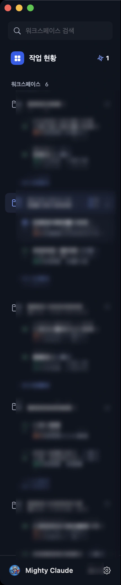
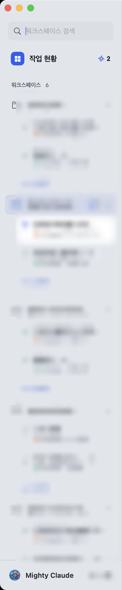
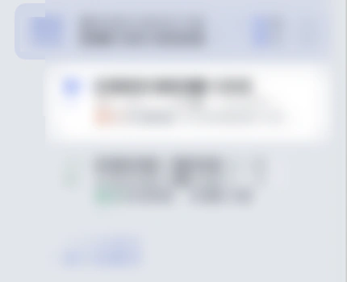

사이드바
M/WorkspaceView.swift:71-341, 459-529



| 부분 | 규칙 |
|---|---|
| 검색창 | magnifyingglass(sidebarInk2) · spacing 6 · 12pt plain · 패딩 6 (inset.sidebarSearch) · subtle r7 · 바깥 h8 t6 · ⌘K로 포커스 |
| 작업 현황 | 22×22 r7 run 채움 + 흰 square.grid.2x2.fill 11 semibold · spacing 8 · 제목 13 semibold · 오른쪽 StatusCounts · 패딩 h6 v4 (inset.sidebarRowV) · 바깥 h6 t6 · 선택 시 card r10 + 그림자 0.06 |
| 섹션 머리 ‘워크스페이스 6’ | 10 semibold sidebarInk2 · 숫자 10 mono · 패딩 h12 t10 b4 (inset.sidebarSection*) |
| 워크스페이스 행 | folder 14 · 이름 12 medium · spacing 8 · 패딩 l6 r4 v4 (inset.sidebarRowV) · 최소 높이 24 · chevron 8 semibold(18×18, 오른쪽 6) · 행 사이 2 (inset.listGap) · 선택 sidebarAccent 0.10 r7 |
| 실행 창 행 | 글리프 14(top 1.5) · 제목 12.5 (끝남 medium / 그 외 semibold) · 메타 11 tabular “[마크] Claude · 4일 전” · 베타 배지 · 글리프와 글 사이 6 · 패딩 h6 v3 (inset.paneRowV) · 바깥 l22 r2 · 선택 card + 0.5pt black 0.07, hover subtle, r8 |
| 창 추가 | plus 10 semibold + ‘창 추가’ 11pt sidebarAccent · spacing 6 · 패딩 l28 r12 v4 · 최소 높이 22 · 메뉴를 엶 |
| StatusCounts | 글리프 12 + 숫자 11 bold tabular · 순서 wait·run·err (긴 형식은 done·stop·idle 추가) · 0은 숨김 |
| 바닥 | 구분선 · 앱 아이콘 20 · spacing 8 · 패딩 h12 v8 · ‘Mighty Claude’ 12 semibold · 테마 토글(다크에서 sun.max, 라이트에서 moon) · gearshape = 설정 |